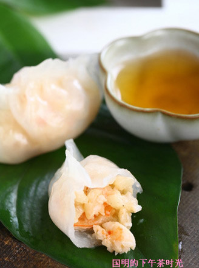
- 让做饭成为一种艺术
- 水晶虾饺
- 工艺： 蒸
- 口味： 咸鲜味
- 烹饪时间：<15分钟
- 吹弹可破的诱惑
水晶虾饺
-
虾饺是广东地区汉族传统名点，广东省茶楼、酒家的传统小吃。广东人饮茶，少不了来一笼虾饺。上乘的虾饺，皮白如雪，薄如纸，半透明，内馅隐约可见，吃起来爽滑清鲜，美味诱人。
虾饺是广东具代表性的点心，以一层澄面皮包着一至两只虾为主馅，份量大小多以一口为限。传统的虾饺是半月形、蜘蛛肚共有十二褶的，馅料有虾，有肉，有笋，现在流行的是独虾虾饺。优质美味的虾饺一定要皮薄而软，如果饺皮是半透明则更佳;虾要爽口弹牙，饺内有少量汁液，全只饺要够热则为最佳。
-
虾400克 澄粉120克 生粉 50克 藕10克 猪肉（肥）50克 苏打粉 少许
做法：
- 鲜虾买回后，剥去外皮，剔除虾线，然后将虾仁中加点小苏打抓拌均匀，再用水清洗干净控干水分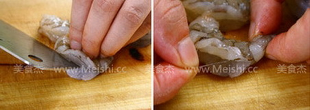
- 然后一半切碎后剁成泥，另外一半切大块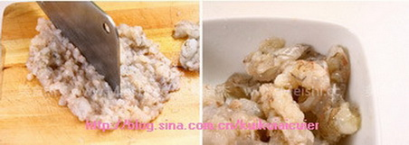
- 肥肉和藕都切成碎末，然后加入到虾肉中
- 将馅中加入盐、糖、胡椒粉、味精、鱼露和香油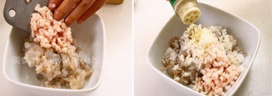
- 所有馅料搅拌均匀
- 用粽子叶或荷叶泡软，垫入蒸笼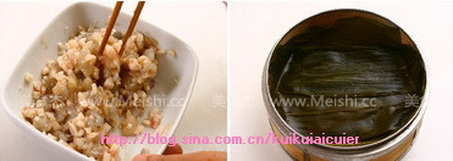
- 将面皮的材料混合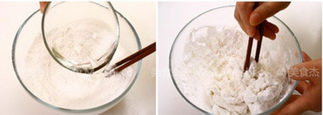
- 和成柔软的面团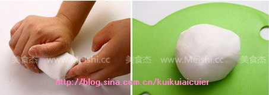
- 搓成长条，再揪成小剂子，将小剂子擀成薄片 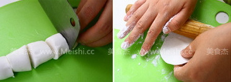
- 中间放入馅料，再放一个大块的虾肉，将边缘捏紧成饺子形状儿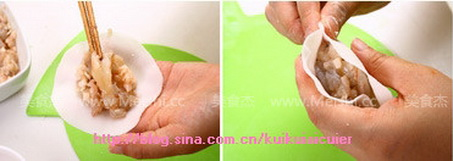
- 包好的饺子放入蒸笼，上锅蒸10分钟左右即可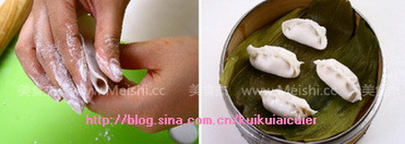 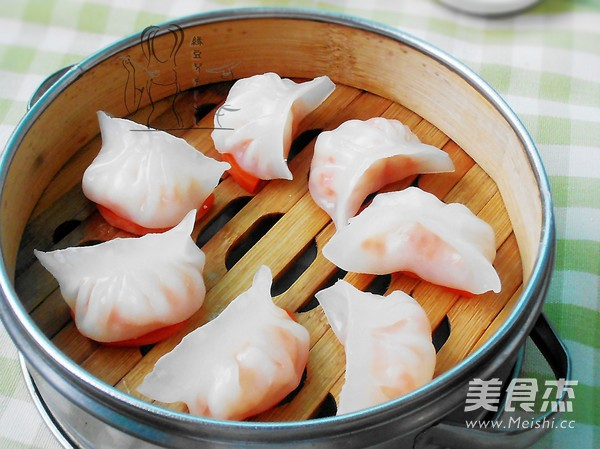 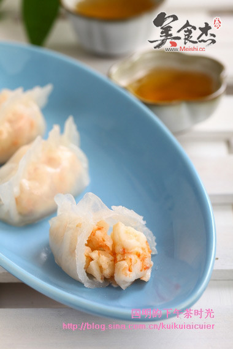
烹饪技巧：
- 1、洗虾仁时加点小苏打可以去除虾仁表面的粘液，也有去腥解腻的作用，处理后的虾仁更透亮也更有弹性；
- 2、馅料中加入肥肉可以使虾肉更滋润，加入藕丁或者是荸荠等可以增加脆的口感；
- 3、虾饺的面团，澄面包出的皮很透亮，加入生粉可以使面团的粘性增加更好操作，这个面团要尽快用，否则会变干不好包，包的慢的话要将大部分面团放入保鲜袋保湿。